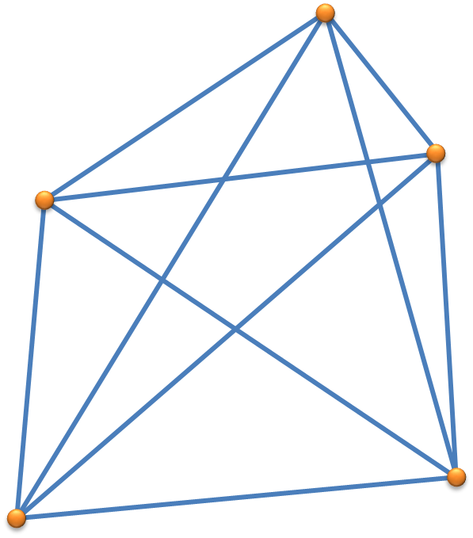
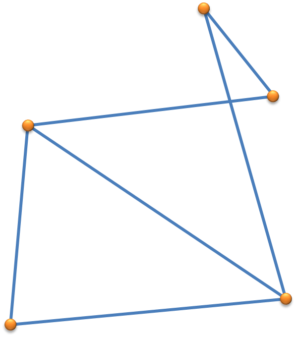
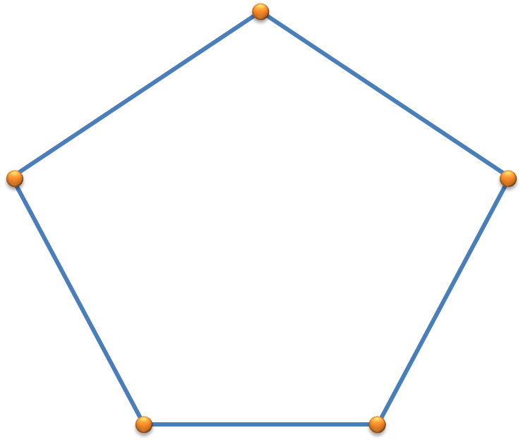
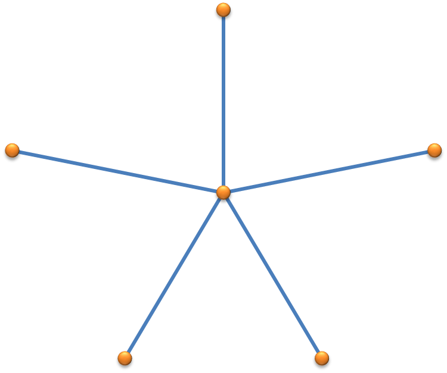
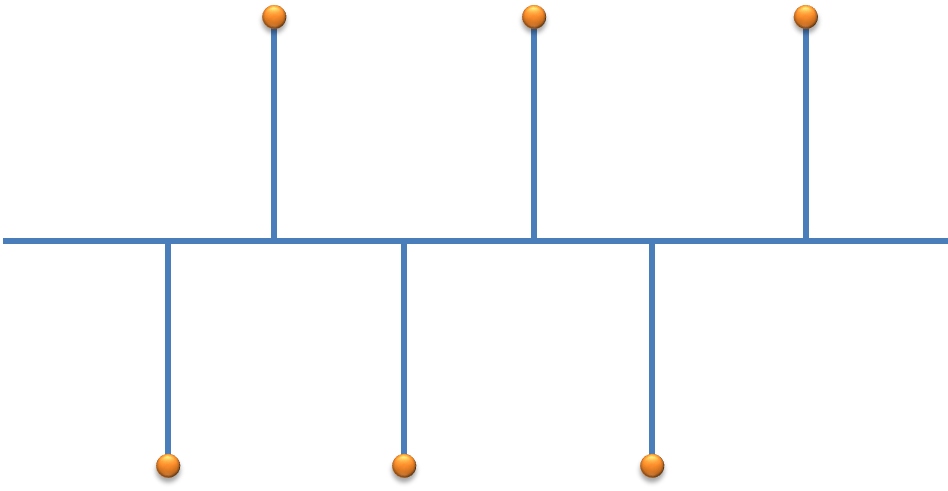

Лекция: Компьютерные сети
Тема 5: Компоненты сети, топологии, адресация, сетевые модели
1. Компоненты компьютерной сети
Компьютерная сеть — это система связи двух или более компьютеров или компьютерного оборудования.
Основные компоненты сети:
Устройства, которые связывают конечного пользователя с сетью и передают или получают информацию.
Примеры: компьютеры, принтеры, смартфоны, IoT-устройства.Служебные устройства, которые передают информацию по сети.
Примеры: коммутаторы, маршрутизаторы, межсетевые экраны.ОС, которая предоставляет доступ к сетевым устройствам и управляет сетевыми ресурсами.
Примеры: Windows Server, Linux, Cisco IOS.Линии связи или пространство, в котором распространяются сигналы.
Примеры: медные провода, оптоволокно, радиоволны.2. Топологии компьютерных сетей
Топология сети — это конфигурация сети, описывающая расположение и соединение сетевых устройств.
Полносвязная топология (Full-Mesh)
Каждое устройство связано со всеми остальными. Обеспечивает высокую отказоустойчивость, но требует много ресурсов и сложна в расширении.
Неполносвязная топология (Partial-Mesh)
Упрощённый вариант полносвязной топологии, где некоторые связи удалены. Используется для экономии ресурсов.
Кольцевая топология (Ring)
Устройства соединены в кольцо, данные передаются последовательно. При обрыве кабеля сеть становится неработоспособной.
Звездообразная топология (Star)
Все устройства подключены к центральному узлу (коммутатору). Удобна для локальных сетей, но отказ центрального узла парализует всю сеть.
Топология "Общая шина" (Bus)
Все устройства подключены к одному кабелю. Проста в установке, но крайне неустойчива к повреждениям.
3. Адресация сетевых устройств
Сетевой адрес — уникальный идентификатор устройства в сети, необходимый для доставки данных.
Требования к сетевым адресам:
- Уникальность
- Иерархичность
- Компактность и простота запоминания
- Удобство администрирования
Типы сетевых адресов:
- MAC-адрес (физический адрес) — уникальный идентификатор сетевого адаптера. Пример: 00-B3-CF-34-4E-11
- IP-адрес (сетевой адрес) — числовой адрес устройства в глобальной сети. Пример: 195.210.208.123
- Доменное имя (символьный адрес) — удобное для человека имя устройства. Пример: rasp.tpu.ru
4. Сетевые модели и протоколы
Сетевая модель — иерархическая структура, разбивающая задачу передачи данных на уровни. Каждый уровень взаимодействует только с соседними.
Модель OSI (7 уровней):
Передача битов по среде (кабели, радиоволны).
Адресация в локальной сети, обнаружение ошибок (MAC-адреса, Ethernet).
Маршрутизация, IP-адресация (IPv4, IPv6).
Обеспечение надежной передачи данных (TCP, UDP, порты).
Установление, управление и завершение сеансов связи.
Преобразование данных в понятный приложениям формат (шифрование, сжатие).
Интерфейс для сетевых приложений (HTTP, FTP, Email).
Инкапсуляция и декапсуляция
Процесс добавления заголовков каждого уровня к данным при передаче (инкапсуляция) и их извлечения при приеме (декапсуляция).

5. Клиент-серверная архитектура
Клиент-серверная архитектура — сетевая архитектура, в которой задачи распределены между поставщиками услуг (серверы) и заказчиками (клиенты).
Основные принципы:
- Сервер — программа или устройство, предоставляющее ресурсы или услуги.
- Клиент — программа или устройство, запрашивающее услуги у сервера.
- Взаимодействие происходит через сетевые протоколы (HTTP, FTP, SMTP и др.).
- Серверы обычно размещаются на высокопроизводительных машинах.
Большинство современных сетевых сервисов (веб-сайты, почта, облачные хранилища) построены по клиент-серверной модели, что обеспечивает централизованное управление ресурсами и безопасность.
Компьютерные сети представляют собой сложные системы, состоящие из аппаратных и программных компонентов, соединённых по определённым топологиям. Понимание принципов адресации, сетевых моделей и архитектур позволяет эффективно проектировать, настраивать и администрировать современные сети.